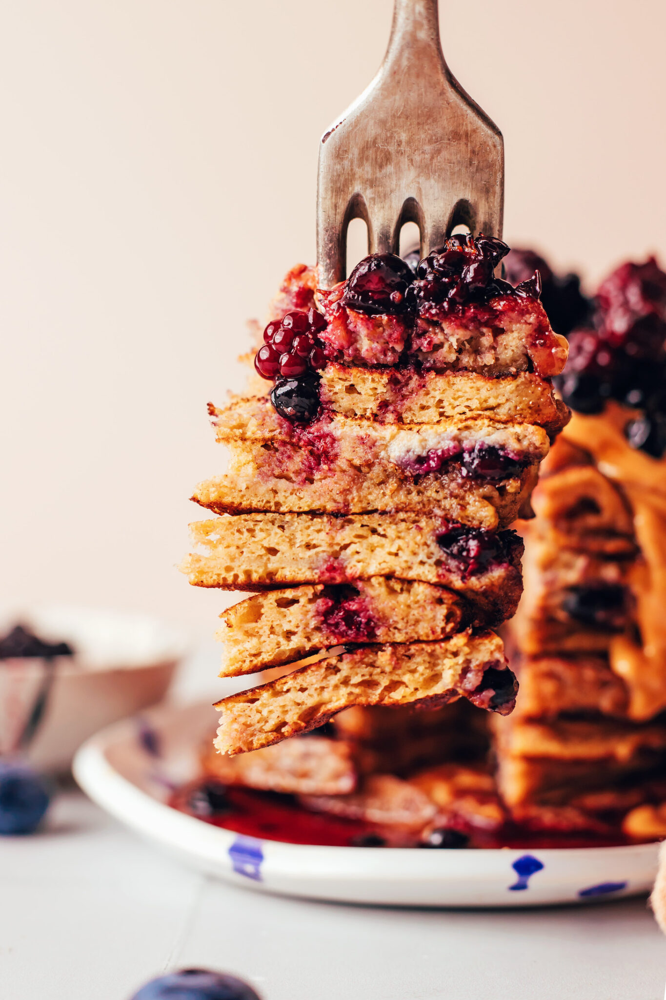

plantain pancakes

Sweet 'maybe' fluffy plantain pancakes
Good for breakfast or make it for dessert with coconut sauce.
Ingredients
- 1 green (firm)* plantain, peeled and sliced
- 2 large eggs* (organic, pasture-raised when possible)
- 1 Tbsp maple syrup (or honey)
- 1 tsp vanilla extract
- 1/2 tsp ground cinnamon
- 1/2 tsp baking powder (optional // for extra fluffiness)
- 1 healthy pinch sea salt
- Coconut oil or dairy-free butter (for cooking // dairy butter works, too)
ADD-INS optional:
- Fresh or frozen blueberries
- Chocolate chips
- Dairy-free Nutella (or nut butter)
Instructions:
- Trim the ends off the plantain and discard. To peel the plantain, use the tip of your knife to make a shallow cut lengthwise through the peel,
doing your best not to pierce the flesh of the plantain. Then slide your thumb under the peel and peel away from the cut, removing and discarding the peel.
Cut the plantain into ~1 ½ inch slices.
- To a blender, add the sliced plantain, eggs, maple syrup, vanilla, cinnamon, baking powder (optional), and sea salt.
Blend until smooth with no chunks of plantain remaining, about 30-45 seconds.
- Heat a large cast iron or non-stick skillet (or a griddle) over medium heat. Once hot, add dairy-free butter or coconut oil — it should sizzle when hot enough. Reduce the heat if the oil/butter is smoking.
Add ~1/4 cup measurements of batter into the skillet and cook for 2-3 minutes, until the edges are set (option to sprinkle blueberries or chocolate chips
over the batter before flipping).
Flip and cook for another 1-2 minutes on the other side, until golden on both sides.
Continue cooking with the remaining batter, adding more coconut oil or dairy-free butter to the skillet if it looks dry.
- Serve warm with your choice of toppings. We like berry compote or sliced bananas, homemade Nutella or nut butter, and maple syrup (all optional)